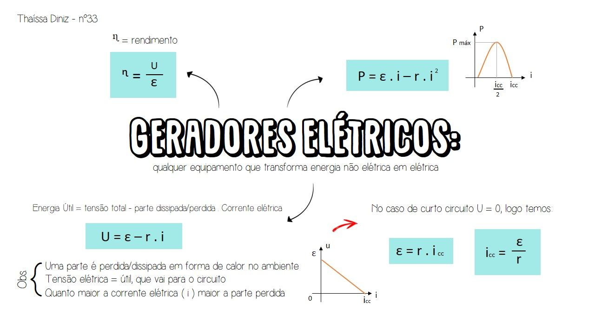
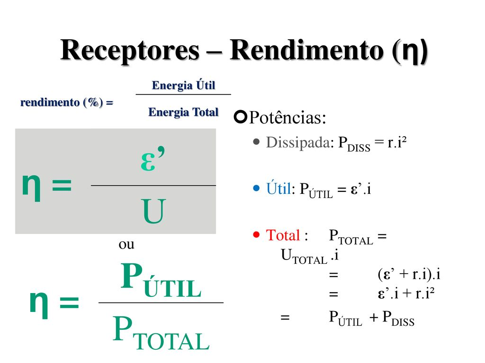
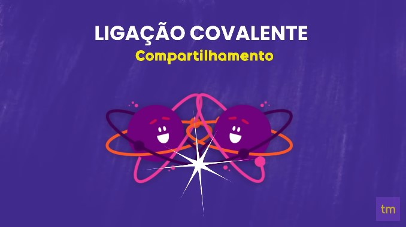

Material de Ciencias da Natureza
Biologia
Evolução Química (hipótese de Oparin e Haldane);
A origem da vida na Terra é um dos temas mais controversos sem solução evidente.
Por isso, muitos se
dedicaram a estudar e tentar explicar como surgiram os seres vivos no planeta.
As principais
hipóteses são:
A evolução química é a hipótese mais aceita para a origem da vida no planeta.
Segundo essa hipótese,
associações entre moléculas geraram agrupamentos cada vez mais complexos até que promoveu o surgimento
da vida.
Os autores acreditavam que as condições físicas e químicas da atmosfera primitiva tenham
contribuído com a formação das primeiras moléculas orgânicas, chamadas de coacervados.
No interior
desses pequenos grupos de moléculas, os coacervados, ocorriam diversas reações químicas, que foram os
tornando mais complexos e estáveis.
Experimento de Miller
Para estudar o surgimento das primeiras moléculas orgânicas, o
químico Stanley Miller realizou um experimento que simullava as condições
da terra primitiva,
tais quais permitiram o surgimento das primeiras moléculas orgânicas.
O cientista utilizou
materiais
que continham elementos que compõem moléculas orgânicas, tais como: oxigênio (O),
carbono (C),
hidrogênio (H) e nitrogênio (N) .
O ambiente continha uma atmosfera
primitiva, ou seja, havia altas
temperaturas e muitas descargas elétricas.
Virus: Vivos ou Não?
Os vírus são organismos que intrigam os cientista devido as suas diversas peculiaridades. Muitos consideram os vírus seres vivos, no entanto, se tratam de organimos sem vida. Os vírus apresentam algumas características que indicam que se tratam de seres não vivos. Uma dessas características é a ausência de células, uma característica presente em todos os seres vivos, segundo a famosa Teoria Celular. Sem células, portanto, os vírus não são seres vivos.
Apesar de apresentar características que comprovavam que o vírus não é um ser vivo, existem características que nos fazem pensar que eles são, sim, uma forma de vida. Uma delas é a presença de um material genético que armazena todas as informações sobre aqueles seres. Eles também têm a capacidade de evoluir, pois frequentemente ocorrem modificações em suas características. Essas mudanças são observadas facilmente quando falamos do vírus da gripe, por exemplo.
Sendo assim, podemos concluir que os vírus apresentam características tanto de seres vivos quanto de seres não vivos. É por isso que ainda não existe um consenso entre todos os pesquisadores quanto à classificação desses organismos.
Taxonomia e a Classificação dos Seres Vivos;
A taxonomia é o ramo da biologia responsável por descrever, identificar e nomear
os seres vivos de acordo
com os critérios estabelecidos, como aspectos morfológicos, genéticos, fisiológicos e reprodutivos.
A
classificação biológica é um sistema utilizado para organizar os seres vivos por meio de critérios
preestabelecidos. A sistemática é uma área que também auxilia nesse processo, já que estuda as relações
evolutivas entre os organismos, sendo cada vez mais utilizada nesse processo, assim como a biologia
molecular.
O físico e botânico sueco Carolus Linnaeus (1707-1778), considerado o
pai da taxonomia moderna, desenvolveu o sistema de nomenclatura binomial, no qual
os organismos são designados de acordo com gênero e espécie.
Como mencionado, Linneu estabeleceu um
sistema hierárquico de táxons, também chamado de categorias hierárquicas, são elas:
Categorias taxonômicas
Classificação em seis reinos
A classificação em seis reinos foi proposta por Woese e diferencia-se da classificação de Whittaker pela extinção do Reino Monera e a criação do Reino Bacteria e do Reino Archea.
Segundo as classificações mais recentes, o Reino Monera e o Reino Protista deixam de existir, sendo apenas utilizados como coletivo para organismos procariontes e eucariontes unicelulares, respectivamente.
Classificação em três domínios
A classificação em três domínios foi também proposta por Woese e é a mais aceita na atualidade.
Física
Eletrodinâmica
A eletrodinâmica é o ramo da Física que estuda as cargas elétricas em movimento. Os principais conceitos estudados nessa área são a corrente elétrica (i), a resistência elétrica (R) e a potência elétrica (P). A corrente elétrica é o movimento ordenado das cargas e é determinada pela quantidade de carga (ΔQ) que passa em um determinado tempo (Δt). Sua unidade de medida é o ampere (A). A resistência elétrica é encontrada por meio da 1ª e 2ª lei de Ohm, que relacionam a resistência com a tensão (U) e a corrente (i), bem como a resistência com o tipo de material de que o condutor é feito. Sua unidade de medida é o ohm (Ω).
Leis de OHM
A eletrodinâmica é o ramo da Física que estuda as cargas elétricas em movimento. Os principais conceitos estudados nessa área são a corrente elétrica (i), a resistência elétrica (R) e a potência elétrica (P). A corrente elétrica é o movimento ordenado das cargas e é determinada pela quantidade de carga (ΔQ) que passa em um determinado tempo (Δt). Sua unidade de medida é o ampere (A).
A resistência elétrica é encontrada por meio da 1ª e 2ª lei de Ohm, que relacionam a resistência com a tensão (U) e a corrente (i), bem como a resistência com o tipo de material de que o condutor é feito. Sua unidade de medida é o ohm (Ω).

1° Lei de Ohm
A 1ª lei de Ohm determina que a diferença de potencial entre dois pontos de um resistor é proporcional à corrente elétrica que é estabelecida nele. Além disso, de acordo com essa lei, a razão entre o potencial elétrico e a corrente elétrica é sempre constante para resistores ôhmicos.
Essa diferença decorre do consumo da energia dos elétrons, uma vez que essas partículas transferem parte de sua energia aos átomos da rede cristalina, quando conduzidos por meios que apresentem resistência à sua condução. O fenômeno que explica tal dissipação de energia é chamado de efeito Joule.
2° Lei de Ohm
A segunda lei de Ohm explica como a resistência elétrica de um condutor está relacionada a suas dimensões físicas. Segundo essa lei, a resistência de um condutor homogêneo aumenta conforme o comprimento e diminui conforme a área de sua seção transversal. A lei tem esse nome em homenagem ao cientista Georg Simon Ohm, que investigou as grandezas físicas que influenciam na resistência elétrica e percebeu que essa resistência depende de fatores como a temperatura, o material do resistor e sua geometria. A partir dessas observações, foi formulada a Segunda Lei de Ohm, que define a resistência elétrica em função do material de que ele é feito, do seu comprimento e da área de sua seção transversal. Assim, Ohm mostrou que essas características físicas são essenciais para entender como a corrente elétrica se comporta em um condutor.
A resistência elétrica, portanto, é a dificuldade de uma corrente atravessar um condutor quando submetido a uma tensão. Materiais com alta resistividade oferecem maior resistência à passagem da corrente, dificultando o movimento das cargas elétricas.
Potência Elétrica
A potência elétrica, medida em watts (W), representa a energia elétrica fornecida ou convertida por um circuito a cada segundo, de acordo com o Sistema Internacional de Unidades (SI). Essa medida é essencial para compreender o funcionamento dos dispositivos elétricos. Em termos simples, é a quantidade de trabalho que a eletricidade realiza por unidade de tempo.

A potência elétrica é medida em watts (W) e representa a rapidez com que a energia elétrica está sendo usada. Quanto maior a potência, mais energia elétrica está sendo consumida ou fornecida por um dispositivo elétrico em um determinado período. Suponha que temos um dispositivo elétrico, como um secador de cabelo, que opera a uma tensão de 120 volts (V) e consome uma corrente de 10 amperes (A). Vamos calcular a potência elétrica desse secador:
P = V × I
P = 120 V × 10 A
P = 1200 watts (W)
Portanto, a potência elétrica desse secador de cabelo é de 1200 watts, o que significa que ele consome ou utiliza 1200 joules de energia elétrica a cada segundo em que está ligado.
Geradores Elétricos
Geradores elétricos são dispositivos que convertem vários tipos de energia não elétrica (mecânica, eólica, química) em energia elétrica. Eles são usados para garantir energia elétrica sempre que haja falha na corrente fornecida, por exemplo.Assim, a função de um gerador é garantir que a diferença de potencial elétrico (ddp), ou tensão elétrica, dure mais tempo e não interrompa o circuito. O circuito elétrico é percorrido entre os dois polos existentes no gerador.
A força eletromotriz (FEM) corresponde a todo o potencial elétrico que pode ser produzido por um gerador. Ao ser ligado em um circuito, parte da energia gerada é dissipada em forma de calor em decorrência da formação de uma corrente elétrica em seu interior. Esse fenômeno, chamado de efeito Joule, ocorre porque os geradores apresentam certa resistência interna, logo, não há gerador perfeito. A força eletromotriz também pode ser compreendida como a quantidade de energia potencial elétrica que os geradores fornecem a cada unidade de carga elétrica.
Resistores Elétricos
Os receptores elétricos são dispositivos que transformam energia elétrica em qualquer outra modalidade de energia, seja ela mecânica, térmica, entre outras. Um ótimo exemplo de um receptor no nosso cotidiano é o motor elétrico que transforma energia elétrica em energia mecânica, sendo a base para o funcionamento de vários aparelhos, como os ventiladores, liquidificadores, geladeiras, etc.
A energia disponível para o receptor resulta da passagem da corrente elétrica. O trabalho realizado pelos portadores de carga que constituem a corrente elétrica fornece energia para o funcionamento. A diferença de potencial elétrico nos terminais do aparelho nos terminais do aparelho é menor que a tensão nominal do gerador elétrico. Isso se deve à conversão de energia elétrica em outra modalidade de energia.
A tensão nominal do gerados é a diferença de potencial total (ddp) disponível para o receptor. Todo aparelho receptor apresenta uma resistência própria, denominada de resistência interna, que acaba por diminuir a ddp total. A ddp útil é aquela efetivamente utilizada pelo aparelho na conversão da energia elétrica em outra forma de energia. Assim, podemos escrever que a ddp total é a soma da ddp dissipada pela resistência interna e a ddp útil.
Química
Ligações Químicas
As ligações químicas correspondem à união dos átomos para a formação das substâncias químicas. Em outras palavras, as ligações químicas acontecem quando os átomos dos elementos químicos se combinam uns com os outros e os principais tipos são:
A Teoria do Octeto, criada por Gilbert Newton Lewis (1875-1946), químico estadunidense, e Walter Kossel (1888-1956), físico alemão, surgiu a partir da observação dos gases nobres e algumas características como, por exemplo, a estabilidade dos elementos que apresentam 8 elétrons na Camada de Valência.
Portanto, a Teoria ou Regra do Octeto explica a ocorrência das ligações químicas da seguinte forma:
“Muitos átomos apresentam estabilidade eletrônica quando possuem 8 elétrons na camada de valência (camada eletrônica mais externa).”
Ligação Iônica
Também chamada de ligação eletrovalente, esse tipo de ligação é realizada entre íons (cátions e ânions), daí o termo "ligação iônica". Para ocorrer uma ligação iônica os átomos envolvidos apresentam tendências opostas: um átomo deve ter a capacidade de perder elétrons enquanto o outro tende a recebê-los. Portanto, um ânion, de carga negativa, se une com um cátion, de carga positiva, formando um composto iônico por meio da interação eletrostática existente entre eles.
Os compostos iônicos geralmente são encontrados no estado sólido em condições ambientes e apresentam elevados pontos de fusão e ebulição. Quando dissolvidos em água, essas substâncias são capazes de conduzir corrente elétrica, já que seus íons são liberados em solução.
Ligação Covalente
Também chamada de ligação molecular, as ligações covalentes são ligações em que ocorre o compartilhamento de elétrons para a formação de moléculas estáveis, segundo a Teoria do Octeto; diferentemente das ligações iônicas, em que há perda ou ganho de elétrons. Além disso, pares eletrônicos é o nome dado aos elétrons cedidos por cada um dos núcleos, figurando o compartilhamento dos elétrons das ligações covalentes.
As ligações covalentes podem ser classificadas em polares ou apolares. No caso da água temos uma ligação covalente polar, pois os átomos que compõem a molécula apresentam diferentes eletronegatividades. Já o oxigênio (O2) apresenta uma ligação covalente apolar, pois é formado por átomos de um único elemento químico e, por isso, não apresenta diferença de eletronegatividade.
Ligação Metálica
É a ligação que ocorre entre os metais, elementos considerados eletropositivos e bons condutores térmico e elétrico. Para tanto, alguns metais perdem elétrons da sua última camada chamados de "elétrons livres" formando assim, os cátions.A partir disso, os elétrons liberados na ligação metálica formam uma "nuvem eletrônica", também chamada de "mar de elétrons" que produz uma força fazendo com que os átomos do metal permaneçam unidos. Os metais apresentam estado físico sólido em temperatura ambiente, com exceção do mercúrio, o único metal líquido nessas condições. As substâncias metálicas são boas condutoras de calor e eletricidade e, além disso, apresentam um brilho característico.